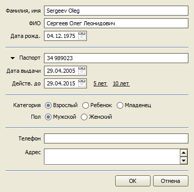

TourFX: Агент. Краткое руководство
В этом руководстве будет показано как ввести информацию о туре в программу, принять оплату от клиента и распечатать договор.
Параметры тура:
- туристы Сергеев Олег и Сергеева Ольга,
- туроператор Teztour,
- Хургада,
- с 19.05 по 26.05, 7 ночей,
- перелет "Москва - Хургада - Москва" авиакомпанией Аэрофлот,
- отель Hilton Resort 5*,
- номер Standard Double,
- питание All Inclusive,
- групповой трансфер "аэропорт - отель - аэропорт",
- медицинская страховка,
- стоимость тура $1967 (по SPO № 154),
- топливный сбор $40 x 2.
Ввод информации о туре в программу
При запуске программы открывается список всех текущих заявок.
Чтобы добавить новую заявку нажимаем кнопку "Создать" над списком заявок. Откроется форма новой заявки.
Сначала добавим Сергеева Олега в базу наших клиентов. Нажимаем кнопку "Добавить", находящующся справа от поля "Клиент". Откроется форма для добавления нового клиента. Заполняем данные клиента.
Таким образом, мы одновременно добавили нового клиента в справочник "Клиенты" и заполнили поле "Клиент" в заявке. В следующий раз, когда Сергеев Олег снова закажет у нас тур, можно будет не заполнять все его данные еще раз, а просто выбрать его в справочнике "Клиенты" с помощью кнопки . (Подробнее о работе с клиентской базой можно узнать в разделе Клиенты.)
Далее вводим даты тура. Для ввода даты можно воспользоваться календарем, октрывающимся при нажатии на кнопку , или непосредственно ввести день, месяц и год в поле ввода.
Чтобы выбрать страну, нажимаем кнопку выбора из справочника в поле "Страна". Откроется справочник "Страны". Выделяем в списке страну "Египет" и нажимаем кнопку "Выбрать".
Теперь введем данные туристов. Нажимаем кнопку "Добавить", расположенную над списком туристов.
Откроется карточка туриста. Заполняем ее данными первого туриста (Sergeev Oleg) и нажимаем "ОК". Еще раз нажимаем кнопку "Добавить" для внесения второго туриста (Sergeeva Elena).

Итак, на данном этапе у нас есть заявка с данными клиента и всех туристов, датами и страной тура. Осталось внести информацию об услугах, составляющих тур.
После заполнения всех полей, заявка будет иметь следующий вид.
Оформление оплаты клиента
Нажимаем кнопку "Оплаты клиента". Откроется форма, на которой находится таблица, показывающая все принятые оплаты (пустая в данный момент), текущее состояние взаиморасчетов с клиентом (суммы "Стоимость", "Оплачено" и "К оплате") и набор полей, позволяющий рассчитать сумму оплаты.
Нам надо взять с клиента предоплату $1000 в рублях по курсу туроператора 37,5. Нажимаем нижнюю радио-кнопку, вводим сумму 1000 в поле "Эквивалент", сумму 37,5 в поле "Курс" и в поле "Сумма" показывается, сколько рублей нужно взять с клиента в качестве предоплаты. Подробнее о пересчетах сумм из рублей в доллары и из долларов в рубли можно узнать в разделе Оплаты клиента.
Далее нажимаем кнопку "Оформить". Откроется заполненная форма документа "Поступление в кассу", предназначенного для регистрации поступлений денег в кассу турагентства. Можно сразу распечатать приходный кассовый ордер, нажав кнопку "Печать", или только зарегистрировать оплату, нажав кнопку "ОК".
После проведения документа "Поступление в кассу" в заявке пересчитается сумма подлежащая к оплате клиентом.
Печать документов для клиента
Вся печать в программе осуществляется с помощью программ Microsoft Excel и Microsoft Word из пакета Microsoft Office версии 2007 и выше. Можно также пользоваться их бесплатными аналогами Calc и Writer из пакета LibreOffice версии 4.1 и выше.
При печати используется шаблон, определяющий вид конечный вид печатной формы. Все шаблоны представляют собой файлы формата Microsoft Excel (.xls) или Microsoft Word (.docx, .rtf) и могут быть изменены пользователем в соответствующем редакторе. Настройке шаблонов посвящен специальный раздел Изменение шаблонов договоров и отчетов.
Из заявки можно распечатать (кнопка "Печать" в левом нижнем углу) следующие документы:
- Договор,
- Заявка,
- Заявка на бронирование,
- Гарантийное письмо.
Можно создать несколько вариантов договора.
Ваша первая заявка в программе TourFX Агент готова.
Что дальше
Вы можете установить программу для всех менеджеров турагентства и настроить ее для использования в вашей фирме:
- отредактировать шаблоны договора и других печатных форм;
- определить как будут нумероваться заявки и кассовые документы;
- заполнить справочник туроператоров теми, с которыми вы работаете;
Остались вопросы? Напишите нам на e-mail